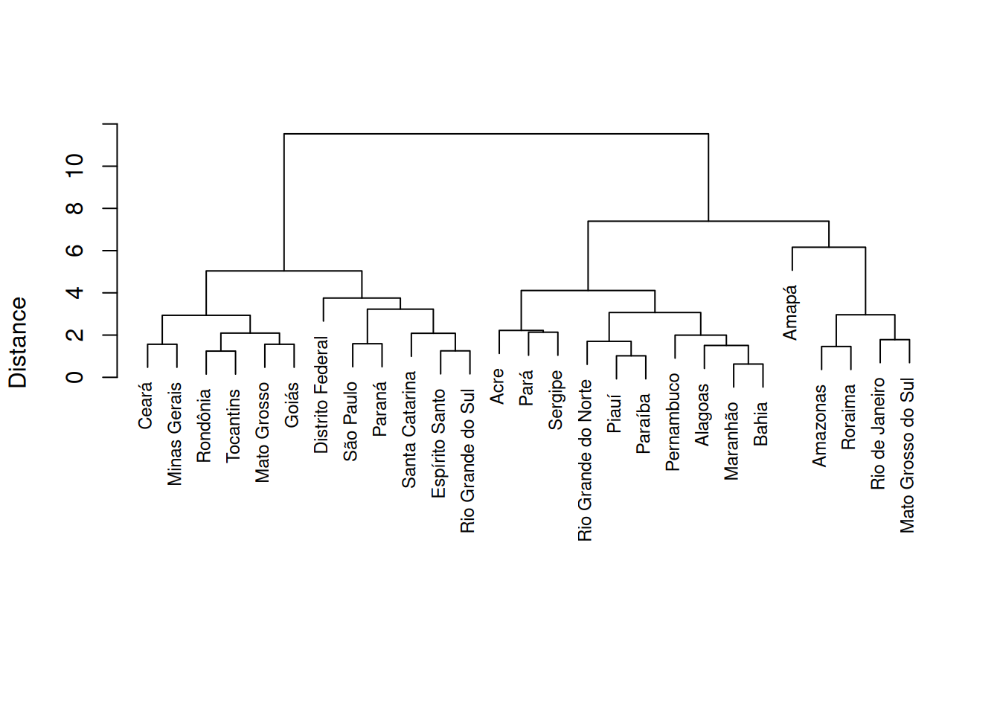
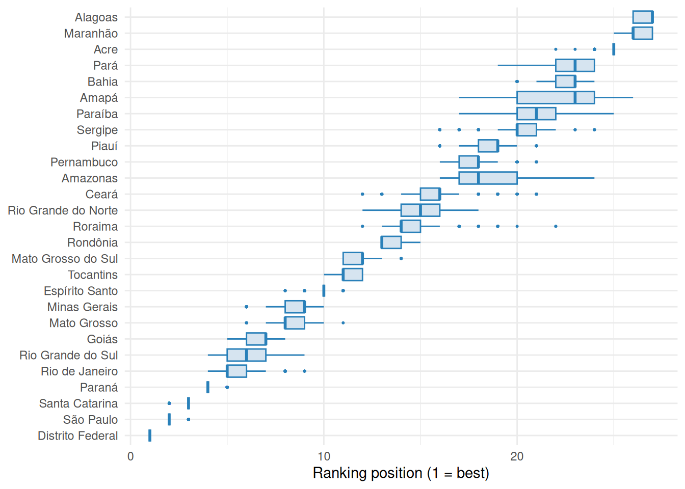
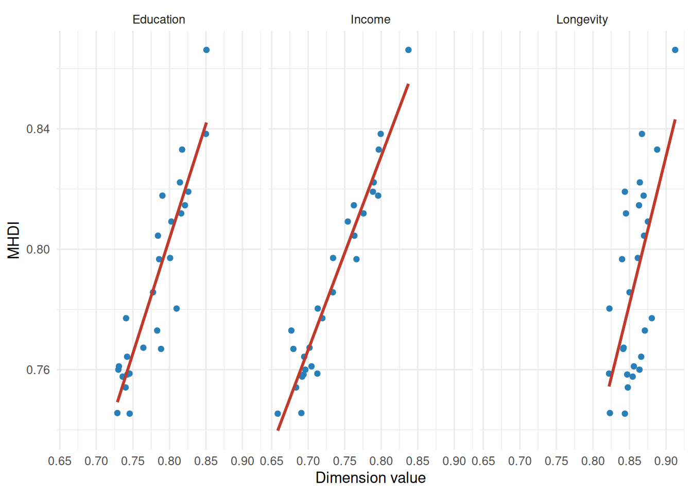
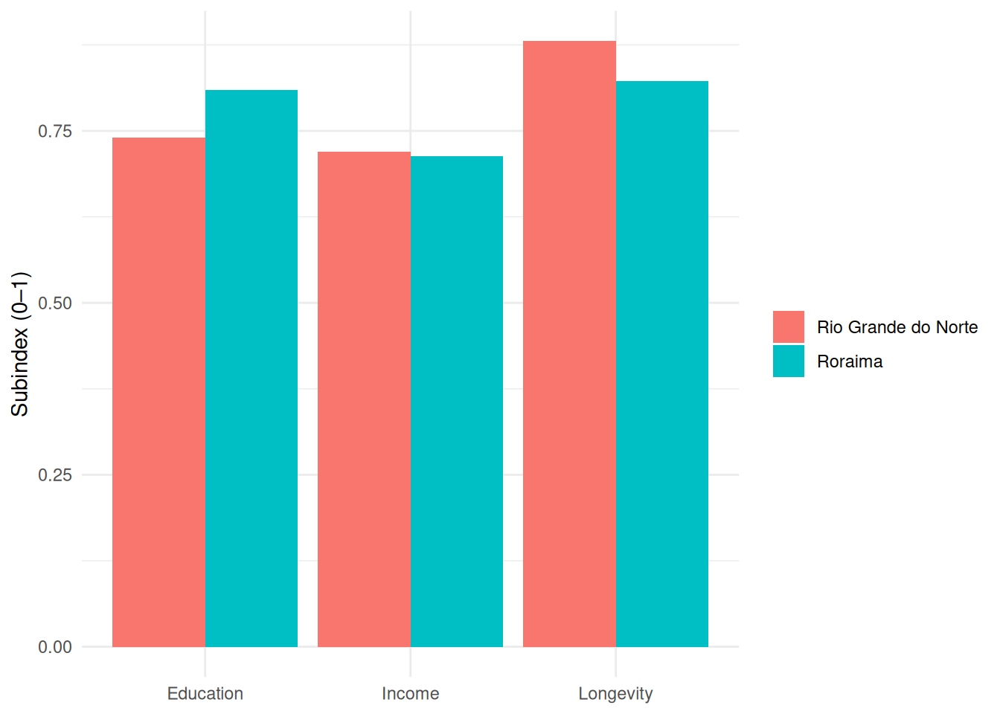
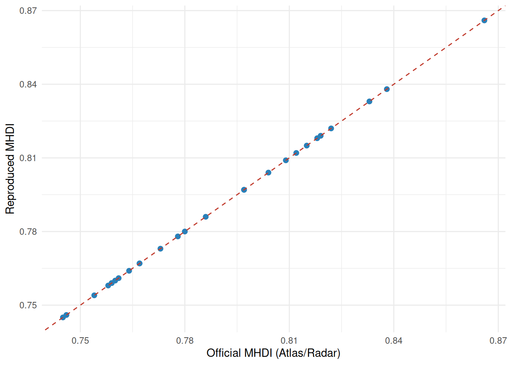
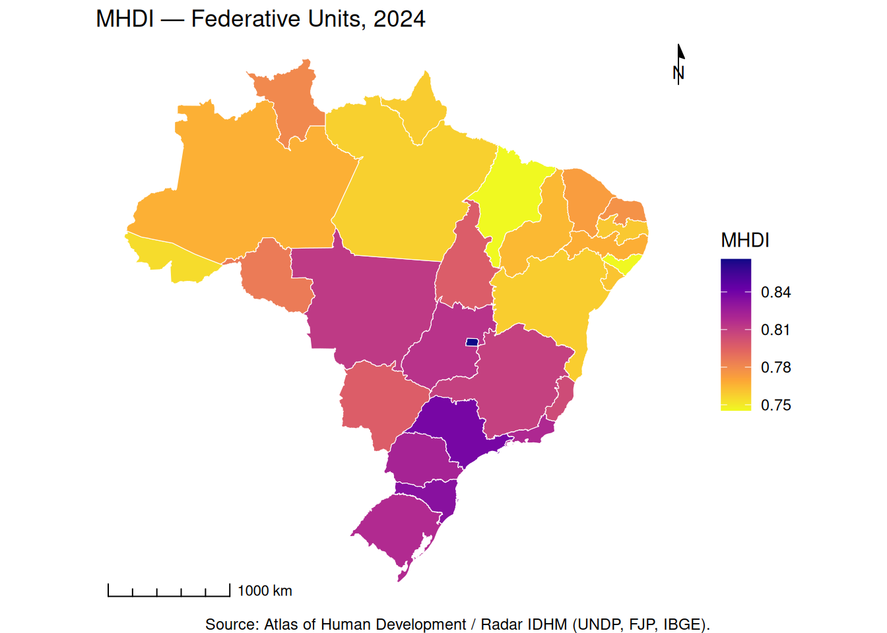
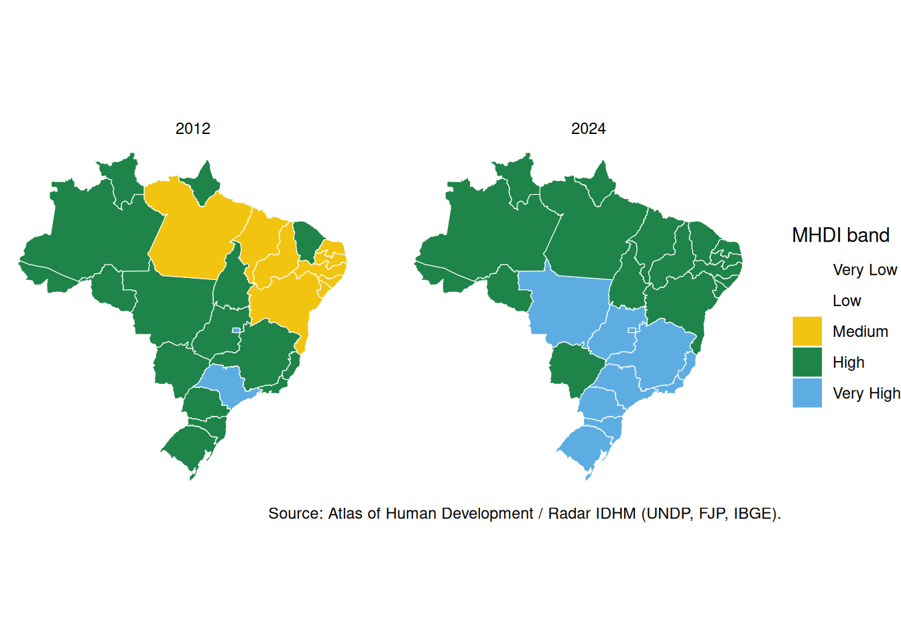
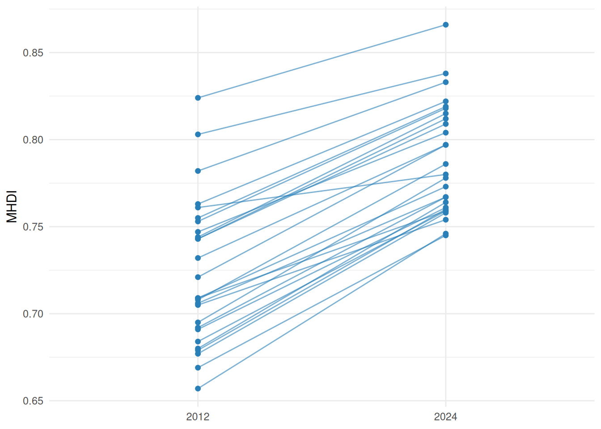

| Step | Description |
|---|---|
| 1 | Theoretical and conceptual framework |
| 2 | Data selection |
| 3 | Data treatment and preparation |
| 4 | Multivariate analysis |
| 5 | Normalization |
| 6 | Weighting and aggregation |
| 7 | Uncertainty and sensitivity analysis |
| 8 | Back to the dimensions |
| 9 | External validation |
| 10 | Visualization and communication |
Tutorial — Building composite indicators
The MHDI in the OECD’s 10 steps · Radar IDHM 2024 · 27 Federative Units
Caio César Soares Gonçalves ![]()
Objectives and roadmap
By the end of this workshop, you should be able to:
- situate the construction of a composite index within the ten steps of the OECD (Organisation for Economic Co-operation and Development, 2008) Handbook;
- distinguish the four methodological decisions that define any index — dimensions, normalization, aggregation and weighting — and recognize the effect of each on the result;
- operationalize these decisions in R, replicating the MHDI and building alternative indices from the same dataset;
- critically read any composite index, identifying the choices that underpin it and the information it suppresses.
The R blocks are executable and follow the order of the steps, building the index cumulatively: each step reuses the objects defined in the previous ones.
Introduction
Context
In 2024, Brazil’s MHDI (Municipal Human Development Index) reached 0.805, placing the country, for the first time, in the “very high human development” band — up from 0.744 in 2012 (UNDP; FJP; IBGE, 2026). The milestone, however significant, raises an analytical question: to what extent is a high summary value compatible with sharp inequalities across subpopulations and territories? It is no coincidence that the Radar IDHM 2024 also began to report the inequality-adjusted MHDI (MHDI-AD), which subtracts from each dimension the share of development eroded by poor distribution — the instrument that measures, precisely, what the aggregate value conceals. The tension between the communicative power of the aggregate number and the information it suppresses is the guiding thread of this tutorial.
From the elementary measure to the composite index
Statistical information travels along two distinct movements. Along an axis of aggregation, one starts from raw data (the count) and moves to derived statistics — first the totals, which aggregate absolute quantities, and then the relative measures built upon them: proportions, ratios, rates and means — and, further on, to composite indices, which combine several measures into a single number. Along an axis of meaning, a derived statistic becomes an indicator when it is endowed with social or programmatic meaning (Jannuzzi, 2014): the unemployment rate is a proportion, but it operates as an indicator because it says something about the labor market. The two axes intersect in the indicator — which may describe a single dimension (analytic) or aggregate several into one number (synthetic).
axis of meaning
(gains significance)
│
RAW DATUM → DERIVED STATISTIC → INDICATOR
(count) total → proportion, ├─ analytic: one dimension
ratio, rate, mean │ (unemployment rate; simple index)
└──── axis of aggregation ┘└─ synthetic: composite index
(aggregates dimensions → MHDI)It is worth distinguishing the terms of the elementary measure: a proportion relates a part to the whole it belongs to (elderly population over total population); a ratio relates distinct magnitudes (population density = population/area); a rate, in the strict sense, relates events to a measure of exposure to risk — the time lived under risk by the population, as in the mortality or fertility rate —, although many of the measures commonly called “rates” are, strictly speaking, proportions, such as the unemployment rate mentioned above; a mean, although formally a ratio (sum over count), deserves separate note because it summarizes an entire distribution into a central value, at the cost of hiding its dispersion.
An analytic indicator describes a specific dimension of reality; an index re-expresses one or more measures on a reference scale — against a base, a standard or an interval (the references we will meet again in normalization, Step 5). When it combines several indicators to represent a multidimensional phenomenon, it is a composite (or synthetic) index, like the MHDI; when it merely rescales a single measure against that reference, it is a simple index — at bottom, an analytic indicator placed on a reference scale, like the MHDI’s own longevity index (life expectancy placed on an interval from 0 to 1) or a price index number (value ÷ base × 100). The simple index is not, then, a category apart — it is not to be confused with the “simple indicator” of the usual taxonomy —, but the analytic indicator itself, already subjected to this rescaling.
The four decisions of every composite index
Assembling a composite index requires four decisions that have no single or neutral solution (OECD, 2008): which dimensions to include, how to normalize the indicators (put distinct scales onto a comparable basis), how to aggregate them (the rule that merges them into a single number) and what weights to assign them. They rarely appear thus, separated: in common usage, normalization and aggregation dissolve into a vague “how to combine,” and the Handbook itself bundles weighting and aggregation into a single step. But each has its own effect. The shift of the HDI — the Human Development Index, the global index of which the MHDI is the Brazilian adaptation — from the arithmetic to the geometric mean, in 2010, touched neither dimensions nor weights — only the aggregation rule — and yet it changed the index’s behavior: by reducing compensability between dimensions — the degree to which a high value in one offsets a low value in another —, it began to penalize unbalanced profiles. It is the proof that aggregating is a lever independent of weighting. Different institutions resolve these decisions in distinct ways: the Social Vulnerability Index (IVS, by Ipea — Institute for Applied Economic Research), the Minas Gerais Social Responsibility Index (IMRS, by FJP — João Pinheiro Foundation) and the Ideb — Basic Education Development Index, by Inep (National Institute for Educational Studies and Research Anísio Teixeira) — each start from their own definition of the concept they intend to measure — from vulnerability to the quality of basic education.
This workshop follows the ten steps of the Handbook on Constructing Composite Indicators (OECD, 2008). It is worth not confusing the two counts: the ten steps are a workflow, not ten decisions. The four decisions above are concentrated in three steps — defining dimensions (1), normalizing (5) and weighting and aggregating (6, which brings together the two we have just distinguished); the others prepare the data (2–4), test the uncertainty and deconstruct the index (7–8), validate it against other measures (9) and communicate it (10). At each step, the MHDI enters as the anchor case, but the goal is broader: we catalog the techniques available at each decision, including those the MHDI does not adopt, so that you can transport the method to any concept you wish to measure.
Step 1 · Theoretical and conceptual framework
The first step in building a composite index consists of defining the concept to be measured and the dimensions that constitute it. It is a theoretical step — prior to any manipulation of data —, yet decisive: the choices made here condition all the others. It is where the general conceptual frame meets its first concrete object: human development.
The ladder of abstraction: from concept to measure
The passage from concept to measure climbs down a ladder of abstraction — from concept to dimensions and from these to the operational definition of the indicators —, in a top-down strategy (as opposed to the data-driven approaches discussed in Step 4). The route encloses a paradox: in operationalizing a concept, we approach it closely enough to measure it and, at the same time, move away from it, since any reduction of a rich concept to a few indicators discards part of its content. The premises embedded in this reduction, however, are not all of the same nature. The instrumental ones — whether a given indicator measures well the dimension it intends to represent — are, at least in part, empirically verifiable, and this is what the steps of multivariate analysis (4), back to the data (8) and external validation (9) will deal with. The normative ones — what counts as development, which dimensions constitute it — are not decided by evidence: it is in them that the epistemological limit revisited in the conclusion resides.
The concept of human development — and two counterpoints
In Mahbub ul Haq’s formulation, drawing on Amartya Sen’s capability approach, human development is defined as the expansion of people’s freedoms and capabilities, in opposition to the identification of development with the mere growth of income (UNDP, 1990; Sen, 1999). Income is not abandoned — it enters as one of the three dimensions —, but demoted from end to means. Operationalized, the conception reduces to longevity, education and income, deliberately leaving out inequality, political freedom and environmental sustainability — and it is the first of these absences that reopens the tension announced in the introduction: a high summary value says nothing about how development is distributed. That these absences are recognized is evident in the very fact that the UNDP later addressed them, in part, through complementary indices — the inequality-adjusted HDI (MHDI-AD, in the Brazilian case) for the first; the planetary-pressures-adjusted HDI for the third —, a sign that the choices of Step 1 are not definitive, but conventions open to revision.
This same step — fixing a concept and deriving dimensions from it — is taken in distinct ways by other indices, and the contrast illuminates how much Step 1 conditions everything that follows:
What theoretical framework defines the concept? (IVS, Ipea). The Social Vulnerability Index starts from its own definition: vulnerability is the absence or insufficiency of assets — material and immaterial — that ought to be within reach of all citizens. It is not the reverse of the MHDI, but a distinct approach, from the assets-and-vulnerability tradition: the focus is not on the realization of capabilities, but on the lack of resources that would allow a family to withstand shocks. Hence its three dimensions are classes of assets — urban infrastructure, human capital, income and labor — and hence, too, the inverted yardstick: since each indicator measures a deprivation, values close to 1 point to the worst situation, contrary to the MHDI. Ipea further marks that vulnerability is not reducible to monetary poverty, which explains income being only one of the three dimensions. The choice of the conceptual framework — and not only of the dimensions — is the Step 1 decision that here conditions everything, including the meaning of the scale.
Who translates the mandate into a measure? (IMRS, FJP). In the Minas Gerais Social Responsibility Index the authority of the concept comes from the law — created by state Law 14,172/2002 and refined by Law 15,011/2004, which defines social responsibility as the duty of the administration to ensure access to health, education, security, social assistance, sanitation, transport, housing, among others, and delegates its measurement to the FJP. But the law delivers a mandate, not an index: translating it required arbitrating themes, indicators, weights and reference standards. And this translation is neither neutral nor faithful to the legal text — several areas foreseen by law (transport, housing, food, leisure) were left out for lack of reliable and comparable municipal data, a restriction made even sharper by the reliance on administrative records. In the 10th edition (IMRS 2024, computed over the 2022–2024 triennium), five operational dimensions remained — education and health, the highest-weighted (23% each), followed by public security, social vulnerability and sanitation and environment (18% each). The concept actually measured is, therefore, the intersection between what the law mandated and what the administrative records allow one to see — and, within each dimension, the FJP further organizes the indicators into three facets the law did not request: the situation, the effort of public policy and the characteristics of municipal management. The Step 1 decision, here, lies not in choosing the concept (the law fixed it), but in operationalizing it under data constraints — and it is the constraint, as much as the mandate, that designs the index.
Step 2 · Data selection
Once the dimensions are defined, the selection step identifies, for each one, the observable indicator that best represents it, in light of a set of criteria and of the desirable properties of a good indicator. The theoretically ideal indicator is not always available, and that limitation must be made explicit.
Selection criteria (and properties of a good indicator):
- Relevance and validity — the indicator adheres to the dimension and measures what it intends to measure (construct validity).
- Coverage — it reaches all units of interest (here, the 27 Federative Units) without systematic gaps.
- Comparability over time and space — same definition, source and reference across periods and territories.
- Periodicity and timeliness — regular updating, close to the period of analysis.
- Reliability and source type — census, sample survey or administrative record, each with its own trade-offs.
- Sensitivity and specificity — captures the real variation of the phenomenon without reacting to extraneous noise.
- Measurability and parsimony — prefer the available and non-redundant indicator (Step 4); use proxies when the ideal one is missing, and document it.
- Polarity — define the direction (higher = better or worse), a decision that reappears in normalization (Step 5).
# c() creates a vector with the names of the packages we will use:
# readxl (read Excel), dplyr/tidyr (manipulate tables), ggplot2 (graphics), sf (maps),
# ggspatial (scale bar and north arrow on maps, Step 10)
pacotes <- c("readxl", "dplyr", "tidyr", "ggplot2", "sf", "ggspatial")
# setdiff() returns the packages from the list that are NOT yet installed...
faltando <- setdiff(pacotes, rownames(installed.packages()))
# ...and, if any are missing, installs them automatically
if (length(faltando) > 0) install.packages(faltando)
# loads (library) each package from the list; invisible() merely suppresses console output
invisible(lapply(pacotes, library, character.only = TRUE))# read_excel() reads the spreadsheet; sheet = "Total" chooses the tab. The result is stored
# (with the arrow <-, R's assignment operator) in the object 'radar': a table (data frame)
# with the 2012–2024 panel and several geographic breakdowns
radar <- read_excel("data/adh_radar_base_2012_2024.xlsx", sheet = "Total")
# filter() keeps only the rows that satisfy the conditions (year = 2024 AND breakdown = state);
# '==' tests equality (note the double equals sign). The 27 Federative Units of 2024 remain
ufs <- filter(radar, ANO == 2024, AGREGACAO == "Unidade da Federação")
# vector with the codes of the 4 school-FLOW columns, which we will reuse later
cols_fluxo <- c("T_FREQ5A6", "T_FUND11A13", "T_FUND15A17", "T_MED18A20")
# glimpse() shows a summary of the chosen columns. Inside ufs[, c(...)], the comma
# separates [rows, columns]: leaving the rows side empty, we ask for ALL rows and only
# the listed columns
glimpse(ufs[, c("NOME", "ESPVIDA", "T_FUND18M", cols_fluxo, "RDPC", "IDHM")])Rows: 27
Columns: 9
$ NOME <chr> "Rondônia", "Acre", "Amazonas", "Roraima", "Pará", "Amapá"…
$ ESPVIDA <dbl> 76.00, 75.86, 75.48, 74.35, 76.26, 74.32, 76.68, 75.62, 76…
$ T_FUND18M <dbl> 64.82, 67.18, 74.51, 79.75, 66.73, 75.35, 69.81, 63.05, 59…
$ T_FREQ5A6 <dbl> 95.64, 93.06, 94.99, 95.84, 98.41, 83.01, 96.06, 98.48, 99…
$ T_FUND11A13 <dbl> 97.15, 91.52, 92.80, 92.26, 92.34, 92.32, 98.67, 95.05, 96…
$ T_FUND15A17 <dbl> 82.29, 74.26, 73.77, 72.35, 67.65, 68.18, 80.65, 72.75, 76…
$ T_MED18A20 <dbl> 65.58, 51.88, 62.91, 65.98, 50.79, 53.05, 67.79, 58.03, 57…
$ RDPC <dbl> 769.89, 563.00, 550.19, 676.77, 592.77, 674.74, 771.42, 48…
$ IDHM <dbl> 0.786, 0.754, 0.767, 0.780, 0.758, 0.759, 0.797, 0.745, 0.…Source: public dataset of the Atlas of Human Development / Radar IDHM, produced by the UNDP (United Nations Development Programme) in partnership with the FJP and the IBGE (Brazilian Institute of Geography and Statistics). For the 2012–2024 panel, the dataset draws on distinct sources depending on the dimension: the Continuous PNAD Annual (National Household Sample Survey, IBGE) for income and education; and the IBGE’s Population Projections and abridged life tables for longevity — complemented, in the metropolitan regions, by the Mortality Information System (SIM/Datasus) and vital statistics. We use here the breakdown of the 27 Federative Units in the year 2024; the full dataset, distributed to participants, contains the other years, the breakdowns by sex and color and dozens of additional indicators.
The very list of sources above illustrates a point about selection: the indicator is conditioned by the design of the source. Censuses are exhaustive, but decennial; sample surveys like the Continuous PNAD are periodic, but subject to sampling error and limited in geographic disaggregation — they support estimates for Brazil, the Federative Units and the metropolitan regions, not for the full set of municipalities; population projections and vital records (such as the SIM) are annual, but of uneven coverage and quality across territories. That is why the Radar updates the MHDI only for Brazil, the Federative Units and the metropolitan regions in intercensal years, whereas the municipal MHDI remains tied to the Demographic Census — and that is why, too, we adopt here the breakdown of the Federative Units.
Longevity
The dimension is operationalized by life expectancy at birth (\(e_0\)), which summarizes in a single measure the level and the age pattern of a period’s mortality. Derived from the life table and incorporating mortality from all causes, it is a robust indicator of the population’s general conditions of health and survival. Because it comes from the life table, \(e_0\) is independent of the observed age structure — which makes it comparable across Federative Units of distinct age compositions, an advantage the crude death rate does not have. Note that the indicator chosen to represent the dimension is itself a sophisticated summary measure, and not a raw datum.
Income
We adopt per capita household income, and not the per capita Gross National Income of the HDI’s global methodology: the household measure is closer to the effective standard of living of the resident population than the macroeconomic aggregate. Since this is a 2012–2024 panel, income is expressed in constant reais, isolating the real variation of purchasing power from the variation of prices — a condition of the temporal comparability required by the selection criterion.
Education
The dimension combines two components of distinct natures: a stock — the schooling of the adult population — and a flow — the school attendance and progression of the young population at the appropriate age, sensitive to age–grade distortion. The Brazilian adaptation employs more educational indicators than the global methodology. Operationally, the stock corresponds to the percentage of people aged 18 or over with complete primary education; the flow, to the mean of four indicators of school attendance and completion, referring to the age brackets 5–6, 11–13, 15–17 and 18–20 — two components that will only be combined in the weighting and aggregation step (Step 6).
Step 3 · Data treatment and preparation
Strictly speaking, this step is broader than the Handbook label suggests (“imputation of missing data”): it is the moment when raw data become fit for analysis. Imputation is only one of its fronts; alongside it come consistency checking, outlier detection and series smoothing — and it is also here that the parameters normalization will use are set (the reference limits and the polarity of each indicator). Every decision made in this step conditions the results and must be documented.
The sequence is a flow, not a script
The Handbook’s ten steps are an “ideal” sequence; real indices adapt them. The IMRS, for example, condenses them into seven blocks: it merges multivariate analysis into selection itself (excluding redundant indicators already at the choice stage) and expands this step into a block of “data treatment, preparation and imputation,” gathering checking, outliers, missing values and smoothing. We keep the steps separate for didactic clarity, aware that, in practice, they often merge.
We begin by inspecting the dataset — recalling that not every absence appears as NA: sentinel values (0, -1, 99, “ignored”) may mask missing data and must be tracked before any count.
# dim() returns the table's dimensions: number of rows (states) and columns (variables)
dim(ufs)[1] 27 83# what matters here are the indicators that FEED the index — not the dozens of columns
# in the dataset. We gather the 8 in a vector: longevity, schooling, the 4 flow ones, income and the
# official MHDI (this last one for the reproduction in Step 9)
cols_calc <- c("ESPVIDA", "T_FUND18M", cols_fluxo, "RDPC", "IDHM")
# is.na() marks each empty cell as TRUE; colSums() sums those TRUE column by column
# (in R, TRUE counts as 1 and FALSE as 0), giving the number of absences per variable.
# ufs[, cols_calc] restricts the check to these 8 columns
na_por_coluna <- colSums(is.na(ufs[, cols_calc]))
# filters the result to show only the columns (among those used in the calculation) with some absence
na_por_coluna[na_por_coluna > 0]named numeric(0)The dataset has 27 rows (the states) and 83 columns, and the filter returns none of the 8 calculation columns: the Radar already comes consolidated, with no missing data to impute in this breakdown. The absence of absences dispenses with imputation, but not with the step — the treatment decision still holds, as the IMRS case below makes clear.
The existing techniques are organized by the fronts of the step, each illustrated, where it fits, on the calculation indicators themselves.
Checking and consistency — structured rules that confront each value with the historical trajectory and with plausible limits, flagging abrupt jumps and incompatible values. By way of example, four plausibility rules on the calculation indicators — in base R, without additional packages:
# each rule is a logical vector (TRUE where the state satisfies the condition, FALSE where it fails).
# the & combines conditions (logical AND); >= and <= test the limits
regras <- list(
renda_positiva = ufs$RDPC > 0, # income > 0: requirement of the log (Step 5)
espvida_plausivel = ufs$ESPVIDA >= 50 & ufs$ESPVIDA <= 90, # life expectancy in a plausible range
escol_percentual = ufs$T_FUND18M >= 0 & ufs$T_FUND18M <= 100, # schooling (%) within [0,100]
# apply(..., 1, all) checks, row by row (margin 1 = states), whether ALL 4 flow
# indicators fall in [0,100]; all() requires the condition to hold for the four at once
fluxo_percentual = apply(ufs[, cols_fluxo] >= 0 & ufs[, cols_fluxo] <= 100, 1, all)
)
# sapply runs through the rules and counts, in each one, how many states FAIL: !ok inverts the logical
# (TRUE becomes FALSE and vice versa) and sum() adds up the TRUE. Zero in all = consistent dataset
sapply(regras, function(ok) sum(!ok)) renda_positiva espvida_plausivel escol_percentual fluxo_percentual
0 0 0 0 The 27 states pass all the rules (zero failures), which confirms the consistency of the already-consolidated dataset. The value of the method, however, appears in raw data: the same rule structure automatically flags the percentage above 100, the null income that would make the log impossible or the implausible jump between years — making data checking reproducible and auditable, rather than a manual case-by-case inspection. For larger sets, packages such as validate and pointblank formalize exactly this logic as auditable objects — separating the declaration of the rules from their verification and generating reports —, but the principle is that of these few lines.
Outliers — detection by interquartile range (boxplot/IQR), z-score or percentiles; treatment by trimming (removing the extremes) or winsorizing (replacing the extremes by the value of the cutoff percentile — e.g. the 2.5 and 97.5 percentiles), in addition to transformation (log) or imputation. It matters especially because, under min–max, a single outlier defines the maximum or the minimum and compresses all the rest of the scale (Step 5). The classic boxplot rule considers atypical any value outside the “fence” \([\,Q_1 - 1{.}5 \cdot \text{IQR},\; Q_3 + 1{.}5 \cdot \text{IQR}\,]\), where IQR (interquartile range) is \(Q_3 - Q_1\):
# function that returns TRUE for values outside the boxplot fence
eh_outlier <- function(x) {
q <- quantile(x, c(.25, .75)) # 1st and 3rd quartiles (Q1 and Q3)
iqr <- q[2] - q[1] # interquartile range
x < q[1] - 1.5 * iqr | x > q[2] + 1.5 * iqr
}
# applies the rule to each calculation indicator and counts how many states fall outside the fence
indic <- data.frame(longevidade = ufs$ESPVIDA,
escolaridade = ufs$T_FUND18M,
fluxo = rowMeans(ufs[, cols_fluxo]),
renda = ufs$RDPC)
sapply(indic, function(x) sum(eh_outlier(x))) longevidade escolaridade fluxo renda
1 0 0 0 # which state is the single atypical case (in longevity)?
ufs$NOME[eh_outlier(ufs$ESPVIDA)][1] "Distrito Federal"Only longevity flags a case outside the fence — the Federal District (79.8 years, against a median of 76.4). It is the exact illustration of this topic’s warning: under sample min–max, this single state would define the ceiling of the longevity scale and compress all the others. The MHDI escapes this by adopting fixed goalposts (25 to 85 years, Step 5), immune to a sample extreme. Note further that being extreme is not being an outlier: the Federal District, the income record-holder (more than double the median), is not even flagged as atypical in income by this rule.
The two remaining fronts do not yield an illustration in this dataset — there are no absences to impute nor municipal noise to smooth —, but they complete the repertoire of the step.
Missing data — before filling, ask why the datum is missing, since the valid method depends on it (Rubin, 1976). In Rubin’s (1976) typology, the absence may be: missing completely at random (MCAR) — unrelated to anything, in which case simply dropping the incomplete rows does not bias the result, only reduces the sample; missing at random (MAR) conditional on something you observe — e.g. more responses are missing in less populous states, a characteristic present in the dataset, and then a model-based imputation is valid; or missing not at random (MNAR) — when the very value that is missing explains the absence, like the municipality that does not report precisely because it is in a bad situation, the hardest case and without a standard correction. The techniques range from dropping the incomplete rows (valid only in the first case) to simple imputation by mean/median (it fills, but underestimates variance and attenuates correlations, distorting Step 4), to imputation by regression or by similar neighbors (hot-deck/kNN, package VIM), to multiple imputation — which fills several times to propagate the uncertainty (mice) — and to time-series models (Kalman filter, imputeTS).
Smoothing — moving averages (e.g. three-year, which replace each year’s value by its mean with the two neighboring years) reduce short-term oscillations and the noise of rare events in small populations (a single infant death distorts a municipal rate), at the cost of the indicator reacting with a lag to real changes.
In the Radar IDHM, the dataset used here is already consolidated and presents no absences in the selected indicators. The preparation decision, however, does not disappear by omission. The IMRS is the complete case: resting on administrative records of the 853 municipalities of Minas Gerais, it applies checking rules, detects outliers in time series, imputes gaps by a structural model via Kalman filter (imputeTS) and smooths by three-year means — before fixing, for each indicator, the reference limits and the polarity that will feed normalization.
Step 4 · Multivariate analysis
Before combining the indicators, one examines the structure of the data along two axes: across indicators (is there redundancy? does the empirical structure support the theoretical grouping?) and across units (which profiles of states emerge?). The motivation is concrete: strongly correlated indicators capture redundant information, and assigning them equal weights, in practice, over-weights the dimension they share — so-called double counting. The warning has, however, a counter-warning: a certain correlation between measures of one and the same aggregate is expected and does not, in itself, constitute redundancy. Whether two correlated measures are “the same thing” is decided by theory (Step 1), not by the coefficient.
The techniques are organized by these two axes.
Correlation matrix (Pearson/Spearman) — maps the redundancy across indicators, with the base function cor() (the corrplot package helps visualize it as a heatmap):
# Multivariate analysis examines the indicators SEPARATELY — including the 4 flow ones, which will
# only be combined in Step 6. Taking the flow mean already here would hide the redundancy among them.
# The operator |> ("pipe") passes ufs as the 1st argument of transmute(), which builds a table in which
# each column is a raw indicator (to the left of '=', the name; to the right, the dataset column):
indicadores <- ufs |>
transmute(
longevidade = ESPVIDA,
escolaridade = T_FUND18M,
fluxo_5a6 = T_FREQ5A6,
fluxo_11a13 = T_FUND11A13,
fluxo_15a17 = T_FUND15A17,
fluxo_18a20 = T_MED18A20,
renda = RDPC
)
# cor() computes the correlation matrix across the columns; round(..., 2) rounds to 2 places.
# use = "complete.obs" tells it to ignore any absences in the computation
round(cor(indicadores, use = "complete.obs"), 2) longevidade escolaridade fluxo_5a6 fluxo_11a13 fluxo_15a17
longevidade 1.00 0.14 0.40 0.57 0.44
escolaridade 0.14 1.00 -0.31 0.12 0.19
fluxo_5a6 0.40 -0.31 1.00 0.28 0.30
fluxo_11a13 0.57 0.12 0.28 1.00 0.69
fluxo_15a17 0.44 0.19 0.30 0.69 1.00
fluxo_18a20 0.32 0.59 0.21 0.62 0.74
renda 0.56 0.72 0.09 0.47 0.47
fluxo_18a20 renda
longevidade 0.32 0.56
escolaridade 0.59 0.72
fluxo_5a6 0.21 0.09
fluxo_11a13 0.62 0.47
fluxo_15a17 0.74 0.47
fluxo_18a20 1.00 0.64
renda 0.64 1.00The reading of the matrix contradicts the naive expectation and, for that very reason, instructs. First, the flow indicators of primary and secondary education (11–13, 15–17 and 18–20 years) correlate strongly among themselves (of the order of 0.6 to 0.7): it is this redundancy that supports combining them into a single flow measure (Step 6). The 5–6 flow stands out — almost universalized, it varies little across states and therefore decouples from the others (low correlations): a saturated indicator carries little information to differentiate units. Second, schooling (the stock of adults with complete primary education) has only modest correlation with the flow — except with the 18–20 one, closer to the completion of basic education: stock and flow measure distinct facets, the educational legacy and the contemporary school dynamic, and are not reducible to one another. Third, and this is the central warning, the strongest correlation between distinct dimensions is income × schooling (0.72): the classic case of double counting when weighting them equally. The opening counter-warning holds — it is theory, not the coefficient, that decides whether income and schooling are “the same thing” —, but the magnitude recommends caution.
Cronbach’s alpha — measures internal consistency within a dimension (it makes no sense across the multidimensional set). The formula is simple and we compute it directly below, but the psych package (function alpha()) delivers it ready-made. For the five education indicators:
# Cronbach's alpha: k/(k-1) * (1 - sum of item variances / variance of the item sum)
alpha <- function(itens) {
k <- ncol(itens)
(k / (k - 1)) * (1 - sum(apply(itens, 2, var)) / var(rowSums(itens)))
}
# education dimension (stock + 4 flow, all in %), with and without the saturated 5–6 flow
c(com_5a6 = alpha(ufs[, c("T_FUND18M", cols_fluxo)]),
sem_5a6 = alpha(ufs[, c("T_FUND18M", "T_FUND11A13", "T_FUND15A17", "T_MED18A20")])) |> round(3)com_5a6 sem_5a6
0.690 0.744 The α of 0.69 rises to 0.74 when the 5–6 flow is removed — the same saturated item the matrix had already pointed to. It is the correct reading of the metric: alpha is not a “higher is better,” but a diagnostic of cohesion; here, it confirms that the education indicators measure something common and that the near-invariant item adds little.
Principal components (PCA, principal component analysis) and factor analysis — identify the latent structure and can generate weights from the data (bottom-up); weights that reflect variance and correlation, not normative importance (and presuppose adequacy tests, such as the KMO — Kaiser–Meyer–Olkin — and Bartlett’s sphericity). In R, prcomp() (base) does the PCA, factanal() (base) the factor analysis, and the FactoMineR and factoextra packages extend both:
# prcomp() does the PCA; scale.=TRUE standardizes the indicators first (otherwise income, of larger scale,
# would dominate). It reuses the object 'indicadores' (the 7 columns of the correlation matrix)
pca <- prcomp(indicadores, scale. = TRUE)
round(summary(pca)$importance[2, 1:3], 3) # proportion of variance summarized by PC1, PC2, PC3 PC1 PC2 PC3
0.508 0.228 0.110 round(pca$rotation[, 1], 2) # loadings (weights) of the indicators on the 1st component longevidade escolaridade fluxo_5a6 fluxo_11a13 fluxo_15a17 fluxo_18a20
0.36 0.28 0.17 0.42 0.43 0.46
renda
0.44 The first component alone summarizes half the variance (≈ 0.51) and loads almost all indicators in the same direction — a general axis of development that could serve as a data-driven index. The loadings are similar to one another (0.3 to 0.5), except for the 5–6 flow (0.17), again the item that differentiates least. But the caveat holds: these weights maximize statistical variance, they do not translate a judgment about what matters in human development — which is why the MHDI does not adopt them.
Cluster analysis — shifts axis: instead of comparing indicators, it groups units by similarity of profile, revealing types of state. Here via hclust() (base); the cluster and factoextra packages bring diagnostics (such as the optimal number of groups) and plots.
# scale() standardizes; dist() computes the distances among the states; hclust() groups them
# hierarchically. In the dendrogram, the lower the junction, the more alike the states are
d <- dist(scale(indicadores))
hc <- hclust(d, method = "ward.D2")
plot(hc, labels = ufs$NOME, main = NULL, xlab = "", ylab = "Distance", sub = "", cex = 0.75)
The dendrogram separates, broadly, the states of the South/Southeast/Center-West from those of the North/Northeast, with a few cases apart (Amapá, e.g., stands out early). It is the “across units” reading announced at the opening: two states with similar MHDI may fall in distinct branches by having different dimensional profiles — exactly what Step 8 will explore in dismantling the index.
Standardizing to analyze ≠ normalizing the index. PCA and clustering require standardizing the indicators first (the
scale. = TRUEand thescale()of the blocks above), otherwise income — of a much larger numerical scale — would dominate variances and distances. This standardization is instrumental: a z-score internal to the technique, only so that the analysis can see the structure. It is not to be confused with the normalization of Step 5, which is a substantive decision of the index (fixed goalposts, polarity) — and that is why the standardization here does not invert the order of the flow. The correlation matrix, in turn, dispenses with this step (it is already scale-invariant), as does alpha, computed over indicators in the same unit (%).
A caveat of scale is in order: with seven indicators and 27 units, PCA and factor analysis are here mostly illustrative — they require more variables and more cases to be informative. In the MHDI this is secondary, since the structure is theoretical; what is retained is the method, transposable to indices with dozens of indicators.
In the MHDI, the structure is defined theoretically (top-down), not derived from the data; even so, these techniques allow one to verify the redundancy among indicators — and, in other indices, to estimate the weights themselves. In the IMRS, indeed, this analysis is not an isolated step: the exclusion of redundant indicators occurs already at selection (Step 2), the adaptation Step 3 anticipated. In the dataset of states, income and schooling tend to exhibit high correlation, which recommends caution in treating them as independent dimensions of equal weight.
Step 5 · Normalization
The indicators have distinct units (years, %, R$). They must be put onto a common scale.
Normalization encloses a decision that is little visible but consequential: should the “0” and the “1” of the scale correspond to fixed references (goalposts), external to the sample, or to the observed minima and maxima of each year? The MHDI adopts fixed goalposts — that is what makes the 2024 value comparable to the 2012 one. With a sample reference, the comparison is lost in two senses: over time, the best state receives 1 by definition in every year; and across space, merely including or excluding a state alters the score of all the others, since the min/max may change.
\[\text{min-max:}\quad I = \frac{x - x_{\min}}{x_{\max} - x_{\min}} \qquad\quad \text{z-score:}\quad z = \frac{x - \bar{x}}{s}\]
Polarity enters here. Generalizing the min–max, the min/max are replaced by goalposts of worst and best performance: \(I = \dfrac{x - x_{\text{worst}}}{x_{\text{best}} - x_{\text{worst}}}\). When the worst value is the largest (deprivation indicators — age–grade distortion, mortality), the same formula inverts the scale. This is how the IMRS treats its negative-polarity indicators, assigning each a “worst” and a “best” limit — and it is the opposite path to that of the IVS, which deliberately keeps higher = worse as the very meaning of the index.
Existing techniques — the first two (min-max and z-score) are applied in the example below; the others follow the same rescaling logic:
- Min-max (fixed or sample goalposts) — rescales to the interval [0,1]; direct calculation or
scales::rescale(). - Z-score — centers on the mean and divides by the standard deviation (variance 1); base function
scale(). - Ranking (ordinal) — robust to outliers, but discards magnitude; base function
rank(). - Distance to targets/reference — ratio between the value and an external target, for target-oriented indices (e.g. the SDGs — Sustainable Development Goals).
- Distance to the group mean — position above/below the mean (a z-score without dividing by the deviation).
- Categorization by percentiles — groups into ordered classes;
dplyr::ntile()orcut()overquantile(). - Indexing to a base year (index number) — value ÷ base × 100.
- Prior transformations — the log is a case of the Box-Cox family (
MASS::boxcox(),bestNormalize); before transforming, look at the distribution (histogram, outliers) and beware: there is no log of zero.
Comparing three normalizations of longevity (fixed min-max, sample min-max and z-score):
# the dollar sign ($) accesses a table column by name: ufs$ESPVIDA is the vector of life expectancies
ev <- ufs$ESPVIDA
# the three computations below operate on the whole vector at once (R is "vectorized":
# no loop is needed to apply the formula to each state)
fixo <- (ev - 25) / (85 - 25) # min-max with fixed reference (MHDI goalposts)
amostral <- (ev - min(ev)) / (max(ev) - min(ev)) # min-max with the min/max observed in the sample
zscore <- (ev - mean(ev)) / sd(ev) # z-score standardization (mean = mean, sd = standard deviation)
# data.frame() joins the three vectors into columns; summary() summarizes each (min, mean, max...)
summary(data.frame(fixo, amostral, zscore)) fixo amostral zscore
Min. :0.8220 Min. :0.0000 Min. :-1.69825
1st Qu.:0.8437 1st Qu.:0.2394 1st Qu.:-0.63628
Median :0.8560 Median :0.3757 Median :-0.03177
Mean :0.8566 Mean :0.3829 Mean : 0.00000
3rd Qu.:0.8682 3rd Qu.:0.5101 3rd Qu.: 0.56457
Max. :0.9125 Max. :1.0000 Max. : 2.73754 Each method answers a distinct question. In the sample normalization, the best state receives the value 1 by definition, which makes temporal comparison impossible; in the z-score, zero corresponds to the mean, not to the worst case. The min-max situates each unit between a worst and a best scenario; the z-score, relative to the mean of the distribution. There is still a difference beyond what is visible in the summary: the z-score equalizes the dispersion of all indicators (variance 1), whereas the min–max equalizes the range ([0,1]) but not the dispersion — so that, under equal weights, the effective contribution of each indicator to the final index depends on the normalization method adopted.
Applying the MHDI normalizations
Longevity — fixed min-max (goalposts of 25 to 85 years):
\[\text{MHDI-L} = \frac{\text{Life expectancy} - 25}{85 - 25}\]
# creates a NEW column in ufs (ufs$i.longev) with the normalized longevity.
# min-max with fixed reference: lower goalpost 25, upper 85 years
ufs$i.longev <- (ufs$ESPVIDA - 25) / (85 - 25)With fixed goalposts, an observed value may exceed the best (or fall below the worst), generating \(I>1\) or \(I<0\); the MHDI’s convention is to truncate to [0,1] — in R, pmin(pmax(I, 0), 1).
Income — log (decreasing returns) and min-max (R$ 8 to R$ 4,033, in constant reais):
\[\text{MHDI-I} = \frac{\ln(\text{Income}_{pc}) - \ln(8)}{\ln(4033) - \ln(8)}\]
# same idea as longevity, but on a logarithmic scale: log() is the natural logarithm (ln).
# references (already in log) R$ 8 and R$ 4,033, in constant reais
ufs$i.renda <- (log(ufs$RDPC) - log(8)) / (log(4033) - log(8))The log is not a technical detail, but a normative hypothesis (Anand & Sen): the marginal contribution of income to human development is decreasing — an extra R$ 100 is worth more to those who have little than to those who have much. As a bonus, it attenuates the right-skewness typical of income.
Education — each subindicator, already in percentage, is normalized by min–max with fixed goalposts 0 and 100 (dividing by 100); the combination of the two is aggregation (Step 6):
# each subindicator is already in percentage (0 to 100), so dividing by 100 puts it in [0,1]
ufs$si.escol <- ufs$T_FUND18M / 100 # stock: schooling of the adult population
ufs$si.fluxo <- rowMeans(ufs[, cols_fluxo]) / 100 # flow: mean of the 4 attendance columns
# summary() of the four already-normalized subindices, to check that they all ended up in [0,1]
summary(ufs[, c("i.longev", "i.renda", "si.escol", "si.fluxo")]) i.longev i.renda si.escol si.fluxo
Min. :0.8220 Min. :0.6584 Min. :0.5914 Min. :0.7414
1st Qu.:0.8437 1st Qu.:0.6943 1st Qu.:0.6347 1st Qu.:0.8081
Median :0.8560 Median :0.7195 Median :0.6981 Median :0.8276
Mean :0.8566 Mean :0.7339 Mean :0.6944 Mean :0.8282
3rd Qu.:0.8682 3rd Qu.:0.7710 3rd Qu.:0.7481 3rd Qu.:0.8548
Max. :0.9125 Max. :0.8373 Max. :0.8338 Max. :0.8845 The four subindices end up in [0,1], as normalization requires — ready for the combination of Step 6. The summary already anticipates that they occupy distinct levels (school flow higher; adult schooling lower), a difference in level that aggregation will propagate to the final index.
Step 6 · Weighting and aggregation
This step brings together two decisions that are often confused: weighting — with what weight each component enters the index — and aggregation — the rule that merges the components into a single number. They are independent decisions, both value judgments, and each has its own effect on the result.
Weighting — existing techniques
| Path | How | Example |
|---|---|---|
| Equal weights | the “neutral” option (which is also a choice) | MHDI (3 dimensions) |
| Theory / convention | importance set by argument | IMRS weights education/health more |
| Experts | survey, budget allocation, AHP (Analytic Hierarchy Process, Saaty) | — |
| Participatory | consult the target public | — |
| Statistical | the data structure generates the weights | factor analysis, DEA (data envelopment analysis), regression |
Participatory weighting is usually operationalized by budget allocation: a set of experts or stakeholders is asked to distribute a fixed total of points among the dimensions, and the mean of the allocations provides the weights.
A point that often goes unnoticed: in additive and geometric aggregations, the weights are not “coefficients of importance,” but trade-off rates (substitution) among indicators — how much of one compensates the loss of one unit of another (OECD, 2008). “Equal weights” does not mean, therefore, “equal importance,” but a unitary trade-off rate; only in non-compensatory (multicriteria) methods do the weights act as importance. Hence a second subtlety: weighting is hierarchical — weights defined at the indicator level may imply distinct weights at the dimension level, if the dimensions gather unequal numbers of indicators. The IMRS illustrates explicit two-level weighting: unequal weights across dimensions (education and health, 23% each; security, vulnerability and sanitation/environment, 18% each) and, within each dimension, weights by indicator.
Aggregation — existing techniques
\[\text{arithmetic:}\quad I = \sum_k w_k I_k \qquad\quad \text{geometric:}\quad I = \prod_k I_k^{w_k}\]
- Additive (weighted arithmetic mean) — compensatory: the trade-off rate between dimensions is constant (\(w_j/w_r\)), so that the surplus in one compensates the deficit in another always at the same ratio.
- Geometric — partially compensatory: the trade-off rate depends on the relative level (a deficit is the harder to compensate the smaller it already is), and it is this that penalizes imbalance. It requires positive values: if a subindex is 0, the index is 0 — beware of goalposts that produce exactly 0 in Step 5.
- Multiplicative (product) — the geometric mean is its “averaged” form; the Ideb uses the direct product (performance × pass rate/flow), in which a null factor zeroes the result.
- Non-compensatory / multicriteria (MCDA, multi-criteria decision analysis; Condorcet/Borda) — forbids compensation between dimensions; here, yes, the weights express importance.
Although weighting and aggregating are distinct decisions, not every combination is free: some weighting methods presuppose an aggregation — the benefit of the doubt approach (DEA), for example, which assigns each unit the weights that maximize its own score, requires additive aggregation.
Weighting and aggregation in the education dimension
The education dimension itself illustrates the two decisions on a reduced scale — and in a hierarchical structure: one must weight the stock and the flow and define how to combine them, before the dimension enters the index. The MHDI assigns weight 2 to the flow and weight 1 to the stock — privileging the contemporary school dynamic over the educational legacy of the adult population — and combines them by geometric mean:
\[\text{MHDI-E} = \left(I_{\text{stock}}^{1} \cdot I_{\text{flow}}^{2}\right)^{1/3}\]
# the caret (^) is the power. Weighted geometric mean = product of the terms
# raised to the weights, with the final exponent 1/(sum of weights): here weights 1 and 2, hence cube root
ufs$i.educ <- (ufs$si.escol^1 * ufs$si.fluxo^2)^(1/3)
# for comparison, the same geometric mean but with equal weights (1 and 1 → square root)
educ_iguais <- (ufs$si.escol^1 * ufs$si.fluxo^1)^(1/2)
# builds a table with the two versions and the difference between them...
data.frame(uf = ufs$NOME,
educ_idhm = round(ufs$i.educ, 3),
educ_iguais = round(educ_iguais, 3),
dif = round(ufs$i.educ - educ_iguais, 3)) |>
# ...orders by the absolute difference (abs), from largest to smallest (desc), and shows the top 8.
# head(8) returns the first 8 rows
arrange(desc(abs(dif))) |> head(8)The states in which the weight 2 on the flow most alters education are those with the greatest mismatch between stock and flow: where adult schooling is low but school attendance is high, doubling the flow’s weight raises the education subindex above the simple mean. The difference is of a few thousandths, but the direction matters — it shows that the choice of weight (not only that of aggregation) already shifts results within a single dimension.
Aggregation of the three dimensions
Two questions govern the final aggregation: should the three dimensions weigh equally and can a high dimension compensate a low one? The MHDI assigns equal weights and adopts the geometric mean, which limits compensation between dimensions. The parallel with the IMRS holds, which also uses a weighted geometric mean and for the same reason (non-substitutability; OECD, 2008): what distinguishes the two indices is not the aggregation rule, but the weighting — equal in the MHDI, unequal and explicit in the IMRS. The function below parameterizes both choices, allowing them to be varied and their effects observed.
# We define OUR own function. function(...) lists the input arguments; those with
# '=' already carry a default value, used when we do not inform them in the call. Thus, varying
# normalization, aggregation and weights becomes just swapping arguments.
construir_indice <- function(dados,
agregacao = "geometrica", # "geometrica" or "aritmetica"
pesos = c(1, 1, 1)) { # weights of longevity, education, income
# short aliases for the three subindices (L, E, R), only so the formula reads cleanly
L <- dados$i.longev; E <- dados$i.educ; R <- dados$i.renda
# normalizes the weights so they sum to 1 (w[1] is the 1st element of vector w, w[2] the 2nd, etc.)
w <- pesos / sum(pesos)
# if/else chooses the rule: product of powers (geometric) or weighted sum (arithmetic)
indice <- if (agregacao == "geometrica") L^w[1] * E^w[2] * R^w[3]
else w[1]*L + w[2]*E + w[3]*R
# the function returns a table with state, index and rank position.
# rank(-indice) orders in descending fashion (the '-' inverts: higher index = 1st place);
# ties.method = "min" gives the same position (the lowest) to ties
data.frame(uf = dados$NOME,
indice = round(indice, 4),
rank = rank(-indice, ties.method = "min"))
}
# call with the defaults (geometric, equal weights) = the official MHDI; we keep only the 'indice' column
ufs$idhm <- construir_indice(ufs)$indiceGeometric versus arithmetic
# computes the index under the two aggregation rules, changing only the 'agregacao' argument
geo <- construir_indice(ufs, agregacao = "geometrica")
ari <- construir_indice(ufs, agregacao = "aritmetica")
comparar <- geo |>
rename(rank_geo = rank, idx_geo = indice) |> # renames the columns to distinguish the versions
# left_join() pastes the two tables side by side, matching rows by the "uf" column (by = "uf")
left_join(ari |> rename(rank_ari = rank, idx_ari = indice), by = "uf") |>
mutate(mudanca = rank_geo - rank_ari) # mutate() adds a column; positive = rises when switching to arithmetic
# orders by the absolute change (largest first) and, with [, c(...)], selects the columns to display
arrange(comparar, desc(abs(mudanca)))[, c("uf", "rank_geo", "rank_ari", "mudanca")]The states that rise the most when the arithmetic mean is adopted are those with the most unequal profile across dimensions: arithmetic aggregation, with its constant trade-off rate, compensates the imbalance that the geometric one refuses.
Data-derived weights (statistical weighting)
Of the five rows of the weighting table, the only one still without an example is the statistical one — weights generated by the data. Returning to the PCA (Step 4), now applied to the three dimension subindices, the first component provides a set of data-driven weights:
# PCA over the 3 dimension subindices. They are ALREADY normalized in [0,1] (Step 5), so
# we do NOT re-standardize them: scale. = FALSE preserves the dispersion the min-max left — the PCA
# runs over the covariance of the subindices as the index actually uses them. (scale. = TRUE would impose
# variance 1 on all, undoing the normalization already done.)
pca_dim <- prcomp(ufs[, c("i.longev", "i.educ", "i.renda")], scale. = FALSE)
# uses the loadings (in absolute value) of the 1st component as weights, normalized to sum to 1
pesos_pca <- abs(pca_dim$rotation[, 1])
pesos_pca <- pesos_pca / sum(pesos_pca)
round(pesos_pca, 3)i.longev i.educ i.renda
0.119 0.378 0.503 # compares the ranking with data-driven weights to that of the MHDI (equal weights), via construir_indice()
iguais <- construir_indice(ufs)
datad <- construir_indice(ufs, pesos = pesos_pca)
cor(iguais$indice, datad$indice, method = "spearman") # ≈ 1 = nearly identical ordering[1] 0.9871795Income receives about half the weight (≈ 0.50), education a third and longevity only ≈ 0.12 — and, even so, the ranking shifts little (Spearman ≈ 0.99; at most 4 positions). It is the best warning about data-driven weights: income weighs more not because it is “more important” for human development, but because it varies more across the states; longevity, almost homogeneous across the country, is demoted for the same reason. PCA weights measure how much each dimension differentiates the units, not how much it matters — to confuse the two is the risk, and that is why the MHDI fixes equal weights by normative convention, instead of delegating them to statistics.
There is, moreover, a decision embedded in the PCA itself: since the subindices already come normalized (Step 5), we chose not to re-standardize them (scale. = FALSE); with scale. = TRUE, which equalizes the dispersions, the weights would return to ≈ 1/3 each and would hardly reorder — yet another example of how each technical choice carries its consequence. The other paths in the table have their own assumptions and packages: expert weighting via AHP (ahp, pmr) and the benefit of the doubt approach via DEA (Benchmarking, deaR).
Step 7 · Uncertainty and sensitivity analysis
A good index should not be fragile to small methodological changes — and two distinct questions interrogate it. Uncertainty analysis asks how much the result moves when one varies the space of plausible choices (which indicators to include, imputation, normalization, weights, aggregation); sensitivity analysis asks which of these choices moves the result the most. The Handbook recommends using them together.
Existing techniques — almost all appear applied in this step’s examples (and in Step 6); only the rigorous form of sensitivity is left as an indication:
- Uncertainty analysis — propagates the sources of uncertainty (weights, aggregation, normalization…) to the index and describes the distribution of positions of each unit (example in the Monte Carlo, below).
- Sensitivity analysis — points out which factors account for the variation, ideally by variance decomposition and Sobol’ indices (package
sensitivity), which also capture the interactions among factors — something beyond the one-factor-at-a-time test used next. - Monte Carlo simulation — sweeps the joint space of choices, sampling them at random; in base R, with
replicate()andrunif()/sample()(example below). - Rank correlation (Spearman) — measures how much the ordering resists the change of scenario; base function
cor(..., method = "spearman")(example below). - Position shifts — tables of which units rise or fall between scenarios, with attention to policy thresholds and to the extremes of the distribution (as in the geometric × arithmetic and log tables).
Systematic sensitivity (Spearman)
# reference index (the standard MHDI), against which we will compare each scenario
idx_padrao <- construir_indice(ufs)$indice
# list() holds scenarios of mixed nature; each item is itself a list with
# [aggregation rule, weights vector]. The names to the left of '=' label each scenario
cenarios <- list(
"renda dobrada" = list("geometrica", c(1, 1, 2)),
"educação dobrada" = list("geometrica", c(1, 2, 1)),
"índice social (s/ renda)" = list("geometrica", c(1, 1, 0)),
"aritmética (iguais)" = list("aritmetica", c(1, 1, 1))
)
# sapply() applies the same function to each scenario in the list and joins the results into a vector.
# Inside the function, cen[[1]] is the rule and cen[[2]] the weights vector of that scenario
# (double brackets [[ ]] extract ONE element from a list)
spearman <- sapply(cenarios, function(cen) {
idx <- construir_indice(ufs, agregacao = cen[[1]], pesos = cen[[2]])$indice
# Spearman correlation between the standard ranking and that of the scenario (1 = identical ordering)
round(cor(idx_padrao, idx, method = "spearman"), 3)
})
sort(spearman, decreasing = TRUE) # orders from the most stable (≈1) to the least stable aritmética (iguais) renda dobrada educação dobrada
0.997 0.989 0.988
índice social (s/ renda)
0.940 The closer to 1 the Spearman correlation, the more the ordering resists the change of scenario. Low correlations do not make the index “wrong”: they indicate that the ranking is contingent on the methodological choices, which then come to require substantive justification — it is the choice that carries the weight, not a defect of the index. Note further that this is a one-factor-at-a-time test: one varies weights or aggregation, not the joint space; the rigorous version sweeps the combinations by Monte Carlo and attributes the variation to each factor.
Uncertainty by Monte Carlo simulation
The previous test fixes one scenario at a time. The uncertainty analysis recommended by the Handbook does the opposite: it samples the joint space of plausible choices and observes the distribution of positions that results for each unit. Below, each of the 1,000 simulations draws a weight for each dimension (between 0.5 and 2) and one of the two aggregation rules — and records the complete ranking of the 27 states.
# fixes the random generator's seed: ensures the "draws" come out the same on every run
# (reproducibility). Any number works; we use 2026
set.seed(2026)
# replicate(1000, {...}) repeats the block between braces 1,000 times and stacks the results
# in columns — each column is the ranking of the 27 states in one simulation
sim <- replicate(1000, {
w <- runif(3, 0.5, 2) # 3 weights drawn at random between 0.5 and 2
agr <- sample(c("geometrica", "aritmetica"), 1) # draws 1 of the 2 aggregation rules
construir_indice(ufs, agregacao = agr, pesos = w)$rank
})
rownames(sim) <- ufs$NOME # names the matrix rows with the states
# prepares the data for the plot: turns the matrix (states × 1,000 simulations) into "long"
# format (one row per state–simulation pair), which is what ggplot expects
mc <- as.data.frame(sim) |>
mutate(uf = ufs$NOME) |>
# pivot_longer stacks all the simulation columns into a single "rank" column; the -uf means
# "all columns, except uf"
pivot_longer(-uf, values_to = "rank") |>
# reorders the states by the MEDIAN position, so the plot comes out ordered from best to worst
mutate(uf = reorder(uf, rank, median))
# ggplot builds the plot in layers, added with '+'. aes() maps variables to axes;
# geom_boxplot() draws, for each state, the box that summarizes the distribution of the 1,000 positions
ggplot(mc, aes(rank, uf)) +
geom_boxplot(outlier.size = 0.4, fill = "#d6e4f0", color = "#2980b9") +
labs(x = "Ranking position (1 = best)", y = NULL) + # axis labels
theme_minimal() # clean visual theme
The reading is immediate: narrow boxes (Federal District, São Paulo and Santa Catarina at the top; Maranhão and Alagoas at the bottom) indicate positions robust to methodological choices; wide boxes, in the middle of the distribution (Amazonas, Amapá), signal units whose position is an artifact of the rule adopted, and not a stable fact about development. It is the same pattern the IMRS reports — stability at the extremes, sensitivity at the center —, now measured and not merely asserted. The width of the box is, at bottom, an honest measure of how much one can trust each ranking position.
The effect of the logarithmic transformation
# redoes the income normalization WITHOUT the logarithm (linear min-max), to isolate the log's effect
renda_sem_log <- (ufs$RDPC - 8) / (4033 - 8)
# recomposes the index with this alternative income, keeping longevity and education
i_sem_log <- (ufs$i.longev * ufs$i.educ * renda_sem_log)^(1/3)
# compares the positions with and without log side by side
data.frame(uf = ufs$NOME,
rank_com_log = rank(-ufs$idhm, ties.method = "min"),
rank_sem_log = rank(-i_sem_log, ties.method = "min")) |>
mutate(mudanca = rank_com_log - rank_sem_log) |> # how many positions each state shifts
arrange(desc(mudanca)) |> head(10) # the 10 that rise the most when the log is removedWithout the logarithmic transformation, the highest-income units dominate the top of the ordering. The logarithm is, therefore, a value choice — it incorporates the premise of decreasing returns to income — and not a mere technical convenience.
In practice, the IMRS submitted all subindices to alternative normalizations (ranking vs min–max) and aggregations (arithmetic vs geometric) — and their combinations —, at both aggregation levels, concluding for structural stability, especially at the extremes of the distribution. It is worth adopting a writing practice from the IMRS report itself: pairing the robustness analysis with an explicit section of limitations (there titled “robustness and limitations”), in which the dependence on the quality of administrative records and the statistical sensitivity in small municipalities are declared.
Step 8 · Back to the dimensions
This is the Handbook’s “back to the data”: deconstructing the aggregate to expose what it hides. The mean conceals heterogeneity — two states with the same MHDI may have opposite profiles —, and it is exactly the step that arms the reader against the critique revisited in the closing (using the index as a sole criterion leads to targeting errors).
Existing techniques — all illustrated in this step:
- Decomposition into the subindices — directly additive in arithmetic aggregation; additive in the logarithms in the geometric one (examples below).
- Contribution of each dimension to the variation — across units (chart below) and over time (decomposition 2012→2024, further on).
- Profiles by unit — radar or stacked/grouped bars;
ggplot2for the bars,fmsborggradarfor the radar. - Identification of units with equal index and distinct composition — the case that best exposes the heterogeneity hidden by the mean (example below).
ufs |>
select(idhm, i.longev, i.educ, i.renda) |> # keeps only the index and the three subindices
# stacks the three dimension columns into two: "dimensao" (the name) and "valor" (the number)
pivot_longer(c(i.longev, i.educ, i.renda), names_to = "dimensao", values_to = "valor") |>
# recode() swaps the internal codes for readable labels for the chart legend
mutate(dimensao = recode(dimensao,
i.longev = "Longevity", i.educ = "Education", i.renda = "Income")) |>
ggplot(aes(valor, idhm)) + # x-axis = dimension value, y = MHDI
geom_point(color = "#2980b9") + # one point per state
geom_smooth(method = "lm", se = FALSE, color = "#c0392b") + # regression line (lm), without error band
facet_wrap(~dimensao) + # a separate panel for each dimension
labs(x = "Dimension value", y = "MHDI") +
theme_minimal()
The dimension whose fit line is steepest is the one that most differentiates the states; the one with the flattest line barely contributes to distinguishing them. The slope, however, is a heuristic: it mixes the dimension’s dispersion and its covariation with the index (slope = correlation × ratio of standard deviations) and is not to be confused with the assigned weight, which is equal (1/3) for the three. Under equal weights, it is the dimension of greatest dispersion across the states that most governs the ordering — an effect that the normalization of Step 5 already conditions. A cleaner reading uses the correlation (or the R²) of each dimension with the index.
Same index, distinct profiles
The most direct demonstration of the step’s thesis: two states with a practically equal MHDI can get there by opposite paths. Rio Grande do Norte and Roraima have the same index (≈ 0.78), but swapped compositions:
# selects the two states and stacks their three subindices for the chart
perfil <- ufs |>
filter(NOME %in% c("Rio Grande do Norte", "Roraima")) |>
select(NOME, i.longev, i.educ, i.renda) |>
pivot_longer(-NOME, names_to = "dimensao", values_to = "valor") |>
mutate(dimensao = recode(dimensao,
i.longev = "Longevity", i.educ = "Education", i.renda = "Income"))
# grouped bars (position = "dodge") compare, dimension by dimension, the two states
ggplot(perfil, aes(dimensao, valor, fill = NOME)) +
geom_col(position = "dodge") +
labs(x = NULL, y = "Subindex (0–1)", fill = NULL) +
theme_minimal()
The aggregate index is the same, but Rio Grande do Norte sustains itself on longevity and Roraima on education — income nearly ties. A policy cut guided only by the MHDI would treat the two as identical; the return to the dimensions shows that they would demand different interventions. It is the concrete translation of the opening warning — and the bridge to the critique of eligibility, revisited in the closing.
Two developments are worth mentioning. Under geometric aggregation, the contribution of each dimension is not additive in level, but it is in the logarithm — \(\ln I = \tfrac{1}{3}(\ln I_L + \ln I_E + \ln I_R)\) —, so that decomposing the log of the index separates cleanly how much each dimension contributes. And the same logic applies over time: decomposing the index’s variation between 2012 and 2024 (using the full panel, in radar) reveals which dimension pulled the change. Taking the official subindices (IDHM_L, IDHM_E, IDHM_R), which already come normalized in [0,1], the mean variation of each dimension across the 27 states is:
# returns to the full base 'radar' to compare two years
delta <- radar |>
# %in% tests whether ANO is one of the values in the vector c(2012, 2024) — keeps only those two years
filter(AGREGACAO == "Unidade da Federação", ANO %in% c(2012, 2024)) |>
select(NOME, ANO, IDHM_L, IDHM_E, IDHM_R) |>
# pivot_wider does the opposite of pivot_longer: it "widens" the table, creating separate columns by
# year (IDHM_L_2012, IDHM_L_2024, ...), which allows subtracting one year from the other in the same row
pivot_wider(names_from = ANO, values_from = c(IDHM_L, IDHM_E, IDHM_R)) |>
transmute(uf = NOME,
d_long = IDHM_L_2024 - IDHM_L_2012, # 2012→2024 variation of each dimension
d_educ = IDHM_E_2024 - IDHM_E_2012,
d_renda = IDHM_R_2024 - IDHM_R_2012)
# colMeans() takes the mean of each column — here, the mean variation across the 27 states by dimension
round(colMeans(delta[, c("d_long", "d_educ", "d_renda")]), 4) d_long d_educ d_renda
0.0294 0.1257 0.0331 Education advances about four times more than longevity and income over the period — it is education that pulls the rise of the MHDI between 2012 and 2024. The decomposition turns a generic statement (“the country improved”) into a verifiable attribution: which dimension improved, and by how much. At the limit, it is also here that one understands the MHDI-AD: adjusting the MHDI by the inequality within each dimension is an institutionalized “back to the data,” which reopens the aggregate to show how much of the mean is eroded by poor distribution.
Step 9 · External validation
This step — the Handbook’s “links to other variables” — houses two distinct exercises. The first is one of reproduction: recomputing the index and confronting it with the official value verifies whether our pipeline (normalization, weights, aggregation, truncation) reproduces the published one. The second is external validation proper: correlating the index with distinct but related indicators (poverty, employment, mortality), to assess convergent validity — and, conversely, discriminant: if the index correlates almost perfectly with a single already-existing indicator, it adds little.
Existing techniques — all applied below:
- Comparison with the official reference (reproduction) — confronts the recomputed index with the published one, by correlation and by the largest absolute difference (base R).
- Correlation with related external indicators — assesses convergent validity (and, conversely, discriminant) by Pearson/Spearman, with
cor(). - Agreement at the classification-band level (not only of the value) — cross-tabulation of the bands; agreement can further be measured formally by Cohen’s κ (packages
irr,psych). - Comparison with complementary indices — e.g. the MHDI-AD, which shows how much inequality reorders the units (or a vulnerability index, with which a negative correlation is expected).
Reproduction of the official index
\[\text{MHDI} = \left(\text{MHDI-L} \cdot \text{MHDI-E} \cdot \text{MHDI-I}\right)^{1/3}\]
Bands: Very Low (≤ 0.499) · Low (0.500–0.599) · Medium (0.600–0.699) · High (0.700–0.799) · Very High (≥ 0.800).
The reproduction seems trivial — just the formula —, but matching to the last digit requires replicating two numerical conventions of the Atlas: rounding each subindex to three places before combining them (this is how IDHM_L, IDHM_E, IDHM_R are published) and using commercial rounding (half up), instead of R’s default (half to the even number).
# commercial rounding (half up), instead of R's default (half to even)
arred <- function(x) floor(x * 1000 + 0.5) / 1000
# replicates the Atlas convention: each subindex rounded to 3 places before combining;
# in education, the subcomponents (stock and flow) are also rounded
L <- arred(ufs$i.longev)
R <- arred(ufs$i.renda)
E <- arred((arred(ufs$si.escol)^1 * arred(ufs$si.fluxo)^2)^(1/3))
idhm_repro <- arred((L * E * R)^(1/3))
# scatter of the official (x-axis) against the reproduced (y-axis)
ggplot(ufs, aes(IDHM, idhm_repro)) +
geom_point(color = "#2980b9", size = 2) +
# 45° line (y = x): if the reproduction matches the official, the points fall on it
geom_abline(slope = 1, intercept = 0, color = "#c0392b", linetype = "dashed") +
labs(x = "Official MHDI (Atlas/Radar)", y = "Reproduced MHDI") +
theme_minimal()
# quantified agreement: correlation, largest difference and how many states match exactly (of 27)
c(correlacao = cor(ufs$IDHM, idhm_repro),
maior_dif = max(abs(ufs$IDHM - idhm_repro)),
iguais_ao_oficial = sum(idhm_repro == ufs$IDHM)) |> round(4) correlacao maior_dif iguais_ao_oficial
1 0 27 The 27 points fall exactly on the 45° line: correlation 1, maximum difference 0, all states identical to the official. The secret was not in the formulas — those the tutorial already had — but in the rounding conventions. The lesson remains: reproducing a published index requires replicating not only the formulas, but the numerical conventions (order of rounding, tie-breaking rule) that almost never appear in the methodology. (The idhm used in the rest of the tutorial keeps full precision, without intermediate rounding; the difference, in the 3rd decimal place, does not alter rankings or maps.)
It is also worth checking agreement at the resolution that guides decisions — the band:
# cut() converts a continuous number into categories, slicing it at the informed cut points.
# -Inf and Inf are "minus/plus infinity"; right = FALSE makes the interval close on the left
faixa <- function(x) cut(x, c(-Inf, .5, .6, .7, .8, Inf), right = FALSE,
labels = c("Very Low", "Low", "Medium", "High", "Very High"))
# table() cross-tabulates the official bands with the reproduced ones: the diagonal shows the agreements
table(oficial = faixa(ufs$IDHM), reproduzido = faixa(idhm_repro)) reproduzido
oficial Very Low Low Medium High Very High
Very Low 0 0 0 0 0
Low 0 0 0 0 0
Medium 0 0 0 0 0
High 0 0 0 17 0
Very High 0 0 0 0 10All on the diagonal: the 27 states fall in the same band in both computations — consistent with the exact reproduction. Agreement holds not only for the value, but for the class, the resolution that actually guides reading and policy.
External validation (convergent and discriminant)
# EXTERNAL indicators, related but NOT used in the index, from the dataset itself:
# proportion of poor (PMPOB), infant mortality (MORT1) and Gini index (GINI).
# The vector below holds, for each alias, the real name of the column in the dataset
externos <- c(pobreza = "PMPOB", mort_infantil = "MORT1", gini = "GINI")
# sapply() runs through this vector and, for each column, correlates our index with it.
# ufs[[col]] uses the name held in 'col' to grab the corresponding column
sapply(externos, function(col) round(cor(ufs$idhm, ufs[[col]], method = "spearman"), 3)) pobreza mort_infantil gini
-0.825 -0.751 -0.308 The three signs are negative, as theory predicts: where human development is greater, there is less poverty and less infant mortality. The correlation with poverty (−0.83) and infant mortality (−0.75) is strong — convergent validity —, but far from perfect, which dispels the suspicion of redundancy: the MHDI is no mere tracing of any of these measures. The weak correlation with the Gini (−0.31) is the most instructive finding: the level of human development says little about the inequality in its distribution — precisely the dimension the MHDI leaves out (Step 1) and that the MHDI-AD reintroduces, below.
Comparison with the complementary index (MHDI-AD)
The inequality-adjusted MHDI subtracts from each dimension the share eroded by poor distribution. Confronting it with the MHDI measures, in a number, how much inequality reorders the states — closing the guiding thread announced in the introduction.
# builds a table with the MHDI, the MHDI-AD (inequality-adjusted), the loss (%) and the position
# of each state in the two rankings; 'desloca' = how many positions the state changes from one to the other
ad <- ufs |>
transmute(uf = NOME, idhm = IDHM, idhmad = IDHMAD, perda = IDHMAD_PERDA,
rank_idhm = rank(-IDHM, ties.method = "min"),
rank_idhmad = rank(-IDHMAD, ties.method = "min"),
desloca = rank_idhm - rank_idhmad) # positive = rises when adjusting for inequality
# two summaries: the correlation between the two rankings and the mean loss (mean = mean) across the states
c(spearman = round(cor(ad$idhm, ad$idhmad, method = "spearman"), 3),
perda_media = round(mean(ad$perda), 1)) # mean loss (%) due to inequality spearman perda_media
0.955 20.400 # the 8 states that shift the most (in absolute value) when the index is adjusted for inequality
arrange(ad, desc(abs(desloca))) |> head(8)The mean loss hovers around 20%: a fifth of the states’ aggregate human development evaporates when inequality is taken into account. The ordering, however, is largely preserved (Spearman ≈ 0.96) — a sign that inequality and level walk together in the wholesale, but not in the retail: some states drop several positions when poor distribution is discounted, and these are precisely the ones that a “reasonable” MHDI would mask. It is the empirical translation of the tutorial’s thesis: the summary value silences what the complementary index brings back into view.
Step 10 · Visualization and communication
The way of presenting decides whether the index is understood — and the Handbook’s final step (dissemination) recalls that communicating is part of the method, not an addendum.
Existing techniques:
- Choropleth maps —
sf+ggplot2(geom_sf); example below. - Ranking tables —
knitr::kable, orgt/DTfor formatted and interactive versions. - Scatterplots and facets —
ggplot2(facet_wrap); as in the by-dimension chart of Step 8. - Slope charts — for evolution over time;
ggplot2(example below). - Per-unit profile panels — bars or radar (Step 8);
ggplot2,fmsb/ggradar. - Interactive dashboards —
shiny,flexdashboard,plotly,leaflet(maps).
In all, the same principle holds: transparency about the choices that produced the number.
Three technical cares separate a map that informs from one that deceives. First, the classification: cuts by equal intervals, quantiles or natural breaks (Jenks) tell different stories from the same data; for the MHDI, the most defensible is to use the official bands (Very Low to Very High), which are fixed and comparable over time. Second, the palette: for a magnitude that goes from worst to best, a sequential scale is appropriate; it is desirable that it be perceptually uniform and legible for the color-blind (the viridis palettes meet both criteria). Third, the area bias: on the map, extensive states dominate the eye regardless of population, so that the choropleth should be accompanied by a ranking or a cartogram so as not to confuse size with magnitude. To these cares are added the mandatory elements of every thematic map — title, legend, scale, orientation (north) and source —, present in the map below (scale and north via package ggspatial).
# st_read() (package sf) reads the geographic file with the states' outlines; quiet = TRUE silences messages
uf_geo <- st_read("data/uf_brasil.geojson", quiet = TRUE)
# projects to SIRGAS 2000 / Polyconic (EPSG:5880), the official system for maps of Brazil in meters:
# makes the scale bar correct (in lat/long the scale would vary with latitude)
uf_geo <- st_transform(uf_geo, 5880)
# as.integer() converts the IBGE code into an integer, to match the dataset by numeric value
# (safer than matching by name, which varies in accent and spelling)
uf_geo$CODIGO <- as.integer(uf_geo$codigo_ibg)
# left_join() pastes the MHDI data onto the map, matching by the CODIGO column
mapa <- left_join(uf_geo, mutate(ufs, CODIGO = as.integer(CODIGO)), by = "CODIGO")
ggplot(mapa) +
# geom_sf() draws the states' polygons; fill = idhm paints each one according to its index
geom_sf(aes(fill = idhm), color = "white", linewidth = 0.2) +
# continuous viridis color scale (legible for the color-blind); direction = -1 inverts (dark = higher)
scale_fill_viridis_c(option = "plasma", direction = -1, name = "MHDI") +
# mandatory cartographic elements, besides the title and the legend (above):
annotation_scale(location = "bl", style = "ticks") + # scale
annotation_north_arrow(location = "tr", style = north_arrow_minimal(), # orientation (north)
height = unit(0.8, "cm"), width = unit(0.8, "cm")) +
labs(title = "MHDI — Federative Units, 2024",
caption = "Source: Atlas of Human Development / Radar IDHM (UNDP, FJP, IBGE).") + # source
theme_void() # theme without axes or grids, suitable for maps
The map uses continuous fill (scale_fill_viridis_c), which favors the gradient; to communicate to a non-technical public, it is usually more legible to discretize into the official bands, making the human development classes legible instead of nearly indistinguishable tones. With the Atlas/UNDP’s own colors (from red to blue) and two years side by side, the map further communicates the evolution:
# official Atlas/UNDP palette: red → orange → yellow → green → blue
cores_idhm <- c("Very Low" = "#C0392B", "Low" = "#E67E22", "Medium" = "#F1C40F",
"High" = "#1E8449", "Very High" = "#5DADE2")
# official MHDI of the states in 2012 and 2024, discretized into the 5 bands with cut()
faixas_anos <- radar |>
filter(AGREGACAO == "Unidade da Federação", ANO %in% c(2012, 2024)) |>
transmute(CODIGO = as.integer(CODIGO), ANO,
faixa = cut(IDHM, c(-Inf, .5, .6, .7, .8, Inf), right = FALSE,
labels = names(cores_idhm)))
# joins to the map: each state appears twice (once per year), for the two maps side by side
mapa_anos <- left_join(uf_geo, faixas_anos, by = "CODIGO")
ggplot(mapa_anos) +
geom_sf(aes(fill = faixa), color = "white", linewidth = 0.2) +
facet_wrap(~ANO) + # one map per year, side by side
# scale_fill_manual fixes the color of each band; drop = FALSE keeps the 5 in the legend,
# even the absent ones (Very Low, Low), so the scale stays comparable between years
scale_fill_manual(values = cores_idhm, drop = FALSE, name = "MHDI band") +
labs(caption = "Source: Atlas of Human Development / Radar IDHM (UNDP, FJP, IBGE).") +
theme_void()
Between 2012 and 2024, the states in “Medium” (yellow) disappear and the first ones in “Very High” (blue) emerge: the same progression that the temporal decomposition and the slope chart quantified, now legible across the territory.
The choice between gradient and bands is not aesthetic: the gradient suggests a millimetric precision the index does not have (differences of 0.001 between states are not substantive), whereas the bands communicate the order of magnitude that matters. To communicate well is, in the end, to communicate honestly — to display the number and, beside it, the choices and limits that constitute it, which is the point revisited in the closing.
Evolution over time (slope chart)
The map photographs 2024; to show the trajectory, a slope chart links each state’s value at two moments. Using the full panel (radar), the MHDI of 2012 and of 2024:
# panel with the two years; ANO as a factor becomes a categorical axis (two points on the x)
evol <- radar |>
filter(AGREGACAO == "Unidade da Federação", ANO %in% c(2012, 2024)) |>
mutate(ANO = factor(ANO))
# group = NOME links each state's two years by a line — the "slope" of each trajectory
ggplot(evol, aes(ANO, IDHM, group = NOME)) +
geom_line(color = "#2980b9", alpha = 0.6) +
geom_point(color = "#2980b9", size = 1.6) +
labs(x = NULL, y = "MHDI") +
theme_minimal()
All 27 states rise between 2012 and 2024 (mean variation ≈ 0.065), and the lines converge slightly: those that started lower grew more, narrowing the distance to the top. The slope chart communicates in a single frame what the temporal decomposition of Step 8 quantified — and, faithful to the step’s principle, shows the evolution without suggesting a precision the index does not have.
Exercise
To consolidate the method, build an alternative index and compare it to the official MHDI:
- Choose a scenario — another set of weights, the arithmetic aggregation or an index without the income dimension (
pesos = c(1, 1, 0)). - Compute the index with
construir_indice()and generate the corresponding ranking and map, adapting the Step 10 block — with the mandatory cartographic elements (title, legend, scale, north, source). - Identify which states rise and fall the most relative to the official MHDI and interpret the result.
- Confront your reading with the workshop’s thesis: is the observed change defensible in substantive terms, or is it an artifact of the aggregation rule and the weights? (Recall that, in compensatory aggregation, the weight is a trade-off rate, not a coefficient of importance.)
To go further (optional) — reusing the techniques of the previous steps:
- Robustness (Step 7) — instead of a single scenario, run the Monte Carlo and see whether your state of interest has a stable or volatile position.
- External validation (Step 9) — correlate your index with an external indicator (poverty, mortality) and see whether the change of weights improves or worsens convergent validity.
- Data-driven weights (Step 6) — compare your scenario with the weights derived from PCA: does your choice approach or move away from what the data “suggest”?
- Profiles (Step 8) — for the states that shift the most, draw the profile chart and show which dimension explains the shift.
# swap the aggregation and/or the weights below to define YOUR scenario
meu <- construir_indice(ufs, agregacao = "geometrica", pesos = c(1, 1, 1))
# compares the official ranking with that of your scenario and shows who shifts the most
ufs |>
transmute(uf = NOME,
rank_oficial = rank(-IDHM, ties.method = "min"),
rank_meu = meu$rank,
mudanca = rank_oficial - rank_meu) |>
arrange(desc(abs(mudanca)))
# map of the modified index: pastes your index (meu$indice) onto the map and paints the states by it
# (uf_geo already comes projected from Step 10, so the scale stays correct)
mapa_meu <- left_join(uf_geo, mutate(ufs, CODIGO = as.integer(CODIGO), idhm_meu = meu$indice), by = "CODIGO")
ggplot(mapa_meu) +
geom_sf(aes(fill = idhm_meu), color = "white", linewidth = 0.2) +
scale_fill_viridis_c(option = "plasma", direction = -1, name = "My index") +
annotation_scale(location = "bl", style = "ticks") + # scale
annotation_north_arrow(location = "tr", style = north_arrow_minimal(), # north
height = unit(0.8, "cm"), width = unit(0.8, "cm")) +
labs(caption = "Source: Atlas of Human Development / Radar IDHM (UNDP, FJP, IBGE).") + # source
theme_void()Closing — beyond the MHDI
The critiques of the MHDI
No index is immune to critique, and the MHDI has accumulated several — useful less for discarding it than for using it better:
- The eligibility paradox — Guimarães and Jannuzzi (2005) show that using the MHDI as the sole criterion to select needy entities produces targeting errors: a unit in a serious situation in a specific dimension (sanitation, nutrition) may be left out for exhibiting a “reasonable” aggregate MHDI. The original critique targets municipalities — it is at that scale that programs select and exclude beneficiaries —, and so it does not transport directly to the 27 states, which are rarely “eligible” or not for a policy. But the principle is independent of scale, and we have already seen it in action: Rio Grande do Norte and Roraima have the same MHDI by opposite paths (Step 8) — to treat them as identical is exactly the error the critique denounces.
- Absent dimensions — the cut into longevity, education and income leaves out inequality, environmental sustainability, political freedom, security, housing. The UNDP itself recognizes part of this with complementary indices (the MHDI-AD for inequality; the planetary-pressures-adjusted HDI for the environment), a sign that the choice of Step 1 is convention, not truth.
- Goalposts and transformations are conventions — the fixed limits (25–85 years; R$ 8–4,033) and the income log are normative decisions, not facts: altering them shifts the values, as Step 7 showed for the log.
- Ceiling effect — as an indicator approaches its upper limit (the 5–6 attendance, almost universal; longevity, increasingly homogeneous), it loses the power to differentiate the units, and the index ceases to capture what still varies.
- Ecological fallacy and reification — a state’s (or municipality’s) value describes none of its inhabitants, and the aggregate number, repeated, tends to become an end in itself — the “indicator fetishism,” against which the return to the dimensions (Step 8) is the antidote.
As seen throughout the tutorial, the index’s value shifts according to the choices of normalization, aggregation and weighting — which is why it should not operate as a sole criterion. The index is a map: excellent for the overview, deceptive when it replaces the analysis of the components.
An overview of composite indices in Brazil
| Index | Producer | Distinctive methodological decision |
|---|---|---|
| IDHM — Municipal Human Development Index | UNDP / Ipea / FJP | Geometric; fixed min-max; log on income |
| IVS — Social Vulnerability Index | Ipea | Inverted (higher = worse); arithmetic mean; 16 indicators |
| IMRS — Minas Gerais Social Responsibility Index | João Pinheiro Foundation | Unequal and explicit weights; annual periodicity |
| IFDM — Firjan Municipal Development Index | Firjan System | Administrative records (not census) |
| Ideb — Basic Education Development Index | Inep | Multiplicative aggregation (flow × performance), scale 0–10 |
| IPS — Social Progress Index | Imazon (IPS Brasil) | Deliberately excludes income |
| Competitiveness Ranking — of the States | CLP (Center for Public Leadership) / Tendências | 10 pillars, 68 indicators, public weights |
How to read any index in 4 questions
- Which dimensions does it include — and what was left out, by theoretical or data imposition?
- Which indicators operationalize it — census, sample survey or administrative record?
- How does it normalize — fixed or sample reference, and how does it handle polarity?
- How does it weight and aggregate — what weights (equal, explicit or data-derived; and read as trade-off rates) and what rule (compensatory, in the arithmetic; partial or non-compensatory, in the geometric, multiplicative or multicriteria)?
Final considerations
The critiques of the previous section do not condemn the MHDI — they discipline its use. Simplicity is constitutive of the HDI: few dimensions, few indicators and a transparent aggregation, requirements of an index of global reach that must be comparable and credible. This transparency has an epistemological foundation. Since the premises that link the concept to the measure are not testable, one never demonstrates that the index actually measures human development; its validity rests, ultimately, on a shared convention — in the manner of paper money, which is worth something as long as the community recognizes it. Hence the responsibility of those who produce or use it: to keep that convention explicit and honest and, before any public policy decision, to return always to the indicators that compose the index.
Statement on the use of artificial intelligence
In preparing this material, the author used the artificial intelligence assistant Claude (Anthropic) as a support tool — in reviewing and developing the R code, in elaborating and commenting on the examples and visualizations, in revising the text and in checking methodological consistency. All methodological decisions, the interpretation of the results and the final writing are the author’s responsibility; the author reviewed and validated all content produced with the tool’s support.
References
- Anand, S.; Sen, A. (1994). Human Development Index: methodology and measurement. UNDP (Occasional Paper 12). Available at: https://hdr.undp.org/content/human-development-index-methodology-and-measurement
- Fundação João Pinheiro (2025). Índice Mineiro de Responsabilidade Social: metodologia da 10ª edição. Belo Horizonte: FJP (Estatística & Informações, n. 72). Available at: https://drive.google.com/file/d/1CySE1StUkQxNO4JOnx3w7E_31y4SGjUX/view
- Guimarães, J. R. S.; Jannuzzi, P. M. (2005). IDH, indicadores sintéticos e suas aplicações em políticas públicas: uma análise crítica. Revista Brasileira de Estudos Urbanos e Regionais, 7(1). Available at: https://rbeur.anpur.org.br/rbeur/article/view/136
- Jannuzzi, P. M. (2001; 2014). Indicadores sociais no Brasil.
- OECD / JRC — Joint Research Centre (2008). Handbook on Constructing Composite Indicators. Available at: https://www.oecd.org/en/publications/handbook-on-constructing-composite-indicators-methodology-and-user-guide_9789264043466-en.html
- UNDP (1990). Human Development Report 1990. New York: Oxford University Press. Available at: https://hdr.undp.org/content/human-development-report-1990
- UNDP; Ipea; FJP (2013). Atlas do Desenvolvimento Humano no Brasil — metodologia do IDHM. Available at: https://www.atlasbrasil.org.br
- UNDP (2026). Brasil alcança, pela primeira vez, patamar de “muito alto desenvolvimento humano”, aponta PNUD [press release]. Available at: https://www.undp.org/pt/brazil/press-releases/brasil-alcanca-pela-primeira-vez-patamar-de-muito-alto-desenvolvimento-humano-aponta-pnud
- UNDP; FJP; IBGE (2026). Radar IDHM 2024 — evolução do IDHM e de seus componentes, 2012–2024. Brasília.
- Rubin, D. B. (1976). Inference and missing data. Biometrika, 63(3), 581–592. Available at: https://doi.org/10.1093/biomet/63.3.581
- Sen, A. (1999). Development as Freedom. New York: Oxford University Press.